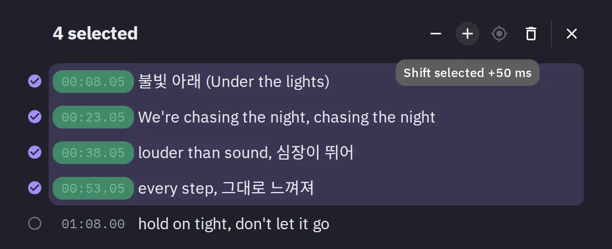

Every line,
right on time.

Play a track, tap along, and export a ready-to-use LRC file. Lyricron times your lyrics to the millisecond while you listen, no account, no upload, nothing ever leaves your device.
Four steps, one pass through the song
No re-recording, no separate timing app. You time the lyrics by listening once.
Drop a track
Drag an MP3 or video file anywhere on the page, or pick one from disk.

Add the lyrics
Type them by hand, import an existing .lrc or .txt file, or search LRCLIB for synced or plain lyrics.


Tap to annotate
Press play, and hit Annotate the instant each line starts. The button lights up the moment you're allowed to. On desktop or mobile, it works the same way.

Preview, then export
Watch the finished sync playback with the active line highlighted in real time, then copy or download a ready-to-use .lrc file.

Every action has a shortcut
Play/pause, annotate, undo, seek, and nudge timestamps, all without touching the mouse. Open the shortcuts reference any time from the keyboard icon in the nav.

Retime a whole verse in one move
Select a run of adjacent lines and act on all of them at once: the whole edit is a single undo step.
- Select any way: click on the checkbox, Shift-click a range, or drag across lines.
- Act on selected lines: −50 / +50 ms shifts, align the block to the playhead, or clear its timestamps.
-
Fully keyboard-driven:
Shift + ↑/↓extends selection,[and]shifts time,Deleteclears timestamps,Esccancels. - Mobile-friendly: long-press to select, tap to add lines.

Everything you need to time a song, nothing you don't
Drag-and-drop import
Drop audio or video anywhere on the page, or use the file picker. Video plays as audio only.
Keyboard-first annotating
Play, annotate, undo, redo, and seek without leaving the keyboard, with ±50ms nudging.
LRCLIB search
Look up a track and pull in already-synced lyrics instead of typing from scratch.
Full undo history
Every timestamp edit, shift, and clear is undoable. Experiment freely while you time a song.
Live preview
Watch the active line highlight in real time as playback moves through your timed lyrics.
Copy and export LRC or SRT
Copy plain or timed lyrics to the clipboard, or download a ready-to-use .lrc or .srt file.
One editor, one exported file
Plain lyrics on the left, timed lyrics on the right: this is what produced the file below.

[00:08.00] 불빛 아래 (Under the lights) [00:23.00] We're chasing the night, chasing the night [00:38.00] louder than sound, 심장이 뛰어 [00:53.00] every step, 그대로 느껴져
Standard LRC, nothing proprietary
Lyricron writes the same .lrc
format every karaoke and lyrics app already reads. Open it anywhere, edit it by
hand, or drop it straight back in to keep refining the timing.
- Millisecond-precision timestamps on every line
- Copy to clipboard or download the file directly
- Re-import your own .lrc to pick up where you left off
Run it locally in under a minute
Lyricron is a local web app. Clone it, install, and it opens in your browser.
npm ci npm run dev
Enjoy Lyricron?
Lyricron is free, private, and open source. If it saves you time, buy me a coffee to support ongoing development.